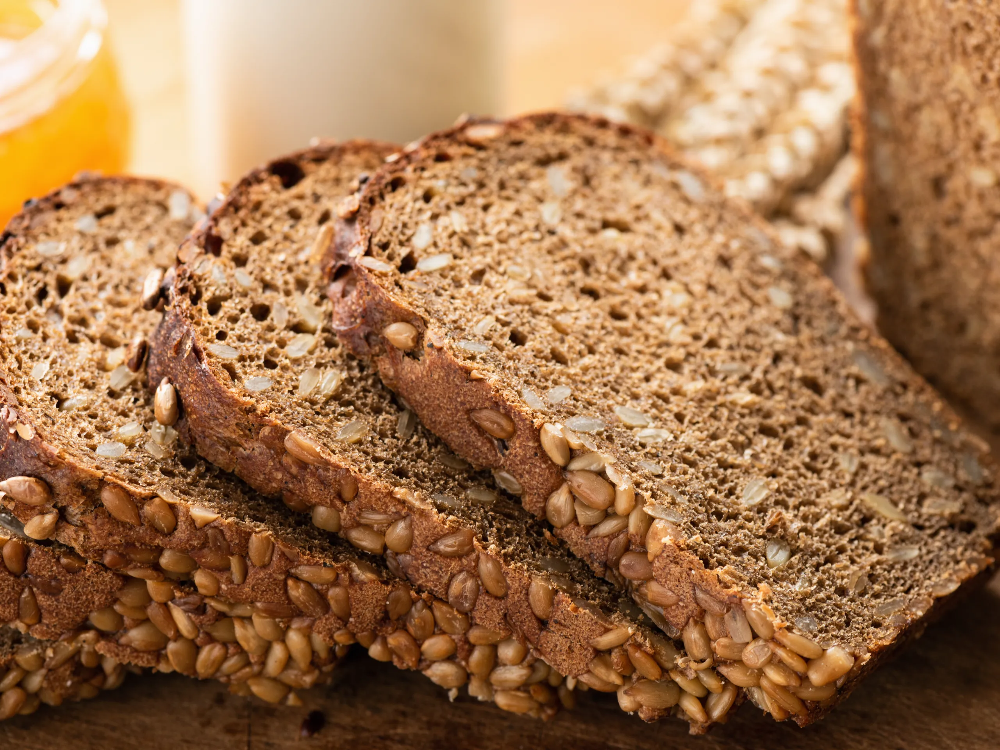
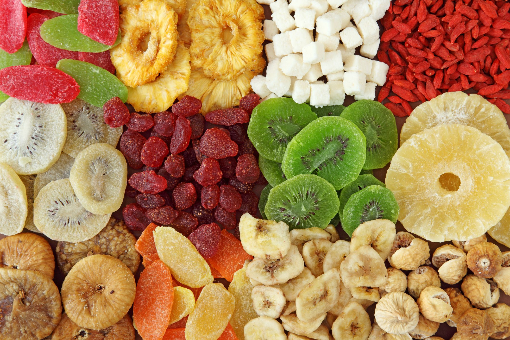

Underweight Recommendations
You are underweight. It's important to maintain a healthy weight. Consider consulting a doctor or a dietitian to create a balanced meal plan.
Food Recommendations
People who need to gain weight can often do this by increasing their intake of foods rich in whole carbohydrates, healthy fats, and protein. Examples include whole grains, dried fruit, potatoes, avocados, oily fish, eggs, and dairy products.
-
Carbohydrates
Carbohydrates, or carbs, are a nutrient that the body uses for energy. People often use the term “carbs” to refer to foods that mainly consist of carbohydrates. However, these foods may contain other nutrients, too. -
Rice

Rice is high in carbohydrates. For example, brown rice provides 76.2 grams (g)Trusted Source in a 100-g serving. This type of rice is higher in protein than some other types of rice. A 100-g portion also contains 357 calories. White rice has a lower protein content, but a person can serve it with other foods, such as meat or beans, to get more protein and calories.
-
grain bread
Whole grain bread contains complex carbohydrates and is higher in protein than white bread. People can increase the caloric value of bread by topping it with a protein-rich food, such as nut butter or avocado. They can also prepare sandwiches containing nutrient-dense ingredients.
-
Dried fruits
fruits contain fructose, which is a sugar in fruit. They are useful as a natural sweetener and a way of increasing the calorie content of meals. For example, people can sweeten cereals or oatmeal with dates, add dried apricots to yogurt, or blend dried fruits in a smoothie. Some dried fruits also work well in salads and certain cooked meals, such as tagines.
-
chocolate
comes from cocoa beans, which are high in carbohydrates. Compared with milk chocolate, dark chocolate usually contains less sugar and a higher cocoa content. This means that it has more of the antioxidants of the cocoa bean. Products with a higher cacao content will provide the most benefits. A simple way to add extra flavor and calories to a dish is to top it with cacao powder or nibs.